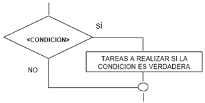
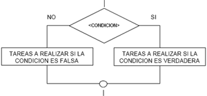
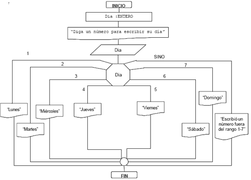

¿QUE ES?
La programación estructurada es una teoría orientada a mejorar la claridad, calidad y tiempo de desarrollo en la programación, utilizando únicamente 3 estructuras básicas. La programación estructurada fue propuesta en el año 1966 por Böhm (---poner biografia---) y Jacopini (---poner biografia---) con la finalidad de facilitar la vida de los programadores, con las siguientes 3 estructuras basicas:
Secuencia:
La estructura secuencial es la más sencilla de todas, simplemente indica al procesador que debe ejecutar de forma consecutiva una lista de acciones (que pueden ser, a su vez, otras estructuras de control); para construir una secuencia de acciones basta con escribir cada acción en una linea diferente.
Seleccción o Condicional:
Sirven para la toma de decisiones en los algoritmos: Si ocurre algo entonces ejecutamos unas sentencias y en caso contrario ejecutamos otras.
Iteracción (ciclo o blucle):
Esta estructura evalúa una expresión que pueda tomar n valores (enteros, caracteres y lógicos pero nunca reales) y ejecuta una acción o grupo de acciones diferente en función del valor tomado por la expresión selectora.
UN POCO DE HISTORIA: En 1968 Edsger Dijkstram (---poner biografia---) publicó el siguiente artículo: Go To Statement Considered Harmful (---poner biografia---), en el que promovió activamente los lenguajes de programación estructurados y pudo eliminar la sentencia GOTO (---poner biografia---).
CARACTERÍSTICAS Y VENTAJAS:
- Los programas desarrollados con la programación estructurada son más sencillos de entender, ya que tienen una estructura secuencial, esto llevo a que dejaran de lado la sentencia GOTO ya que esta se encargaba de hacer complejos saltos de líneas y con la programación estructurada ya no ahi necesidad.
- Otra ventaja es que los programas resultantes tendrán una estructura clara, gracias a que las sentencias están ligadas y relacionadas entre sí.
- La fase de prueba y depuración de los programas se optimiza, corre o ejecuta, ya que es mucho más sencillo hacer el seguimiento de los fallos y errores y, por tanto, detectarlos y corregirlos.
- Al ser más sencillos los programas, son más rápidos de crear y los programadores aumentan su rendimiento.
Como se usan las 3 estructuras básicas:
SECUENCIAL: Esta tiene una asignación muy sencilla la cual se clasifica de la siguiente forma:
- Simples: Consiste en pasar un valor a una variable, por ejemplo a una variable llamada "A" se le va dar el valor de 20: (A <-- 20).
- Contador: Este nos ayuda a dar un numero de veces que se realiza un proceso u operación y se le asegna a una variable, por ejemplo a la variable "A" le damos un incremento de su valor más 1, "A + 1": (A <-- A+1).
- Acumulador: nos sirve para usar una resta, suma, división, multiplicación, etc; por ejemplo a una variable llamada "A" le damos la suma de "17+98", (A <-- 17+98).
Todo esto se usa para poder llevar un mejor orden en el programa y asi facilitar su realización.
EJEMPLO:
Tengo un teléfono y necesito llamar a alguien pero no sé como hacerlo.

EJERCICIO:
SELECCIÓN O CONDICIONAL: Disponemos de tres estructuras alternativas diferentes, pero todas tienen las siguientes clasificaciones:
- Si: Indica el comando de comparación.
- Condición: Indica la condición a evaluar.
- Entonces: Precede a las acciones a realizar cuando se cumple la condición.
- Instrucción(es): Son las acciones a realizar cuando se cumple o no la condición.
- Si no: Precede a las acciones a realizar cuando no se cumple la condición.
- Alternativa simple: Las estructuras condicionales simples se les conoce como tomas de decisión y realizan una acción únicamente cuando la expresión a evaluar resulta en un resultado positivo.
- Alternativa doble: Permiten elegir entre dos opciones o alternativas posibles, en función del cumplimiento o no de una determinada condición.
- Alternativa múltiple: Permiten comparar una variable, o constante, ante diversos posibles valores. Esta estructura es una toma de decisión especializada que permite crear varias ramas dentro de un algoritmo con base a distintos posibles valores de la variable, ejecutando para cada caso una serie de instrucciones especificas.
Estructura multialternativa
Se llaman problemas repetitivos o cíclicos a aquellos en cuya solución es necesario utilizar un mismo conjunto de acciones que se puedan ejecutar una cantidad específica de veces. Esta cantidad puede ser fija (previamente determinada por el programador) o puede ser variable (en función de algún dato dentro del programa).
Existen diversos tipos de ciclos y la mayoría de los lenguajes de programación nos aportan distintas estructuras de repetición en función de ese tipo de ciclo. Vamos a ver entonces los distintos tipos de ciclos que nos podemos encontrar.
Ciclos con un Numero Determinado de Iteraciones
Son aquellos en que el número de iteraciones se conoce antes de ejecutarse el ciclo. Generalmente llamamos a este tipo de ciclo "para" (por "para" tal cantidad de iteraciones) o en inglés habitualmente con la palabra "for".
La forma de esta estructura es la siguiente:

Ciclos con un Número Indeterminado de Iteraciones
Son aquellos en que el numero de iteraciones no se conoce con exactitud, ya que esta dado en función de un dato dentro del programa. A este tipo de bucles lo llamamos "Mientras Que" o "while" en inglés.
Los ciclos "mientras que" realizarán la repetición de un proceso durante "N" veces, donde "N" puede ser fijo o variable. Para esto, la instrucción se vale de una condición que es la que debe cumplirse para que se siga ejecutando. Cuando la condición ya no se cumple, entonces ya no se ejecuta el proceso.
La forma de esta estructura es la siguiente:
Alternativa "Repita-Hasta" de ciclos con un número indeterminado de iteraciones
Dentro de los bucles en los que no sabemos a ciencia cierta cuántas iteraciones se van a realizar tenemos una alternativa denominada "repita hasta", que nos sirve básicamente cuando sabemos que al menos hay que ejecutar el proceso una vez. En inglés este tipo de bucle se suele denominar "do while".
La forma de esta estructura es la siguiente: